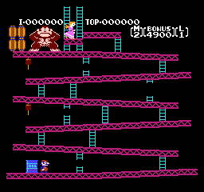

The Role of Video Games
Video games can be a fun and engaging hobby when enjoyed in moderation.
They can improve problem-solving skills, foster creativity,
and even build social connections. Specially since there is so many different
types of games that you can play, from puzzle games to board games, to even
story driven games, that you engange you in its plot just like a cinematic
film would.
However, excessive gaming can lead to negative consequences.
It’s important to balance gaming with other activities to maintain a healthy lifestyle,
since it be very easy to sink in hours into a game, spiaclly a really engagning one.
Thats were playing simpler games its perfect, games like tetris or board games, games
that can be finished in a timely mmanner, but you can still gather enjoyment from them.
Classics and Modern Games

From classic arcade games to modern masterpieces,
gaming has evolved into a diverse and exciting medium for entertainment. But as games
grew in complexity, so did the time it took to finish them, leading to more
engangment from the player, therefore if you are interested in playing games,
but you are not sure if you want to invest so much time into them, then playing
classic gamess is a pefect solution, games like Tetris, Pacman, or Donkey Kong, games
that tend to be very difficult, and also very short, which guarantees that you are
less likely to spend countless hours glued to the screen.
Board Games and their modern accesibility

Games like Club House Games, for the Nintendo Switch,
allow you to play classic board games like chess,
checkers, and even card games like poker, all in a single game.
without needing to go and spend aditional money on a physical board game,
or finding the space at your house to accommodate them, in fact one of the
biggest features why people play this genre of videogames, is because
you can play with your friends online, and you can even play with people
around the world, that can challenge your skils, and even help you improve your abilities.
These are just some of the benefits of playing board games, and why they are so popular.